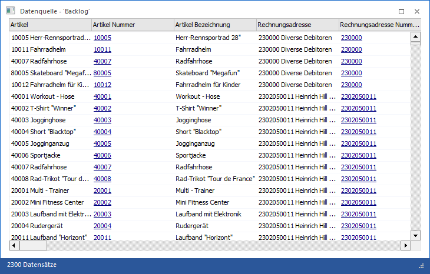
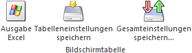

Durch die Anwahl des Ausgabe-Buttons "Ausgabe Tabelle" im Programm Datenquellenverwaltung werden die Daten des ausgewählten Snapshots, der View oder der MasterView in Form einer WinLine Tabelle dargestellt.
Hinweis
Handelt es sich um eine Datenquelle auf Grundlage einer WinLine LIST-Liste, so wird das Fenster "List - Ausgabe in Tabelle" zur Ausgabe genutzt.

In der Tabelle werden alle Daten des Snapshots, der View oder der MasterView angezeigt, wobei auch ggfs. definierte Anmerkungsfelder sichtbar und editierbar sind (nähere Informationen entnehmen Sie bitte dem Kapitel Benutzerdefinierte Auswertungsspalten).
Tabellenbuttons

Ø Ausgabe Excel
Durch Anwahl des Buttons "Ausgabe Excel" wird der Inhalt der Tabelle nach Microsoft Excel übergeben.
Ø Tabelleneinstellungen speichern
Die Spalten einer Tabelle können grundsätzlich an beliebige Positionen verschoben, bzw. in der Breite entsprechend angepasst werden. Durch Anwahl des Buttons "Tabelleneinstellungen speichern" werden die Einstellungen benutzerspezifisch gespeichert und bei dem nächsten Aufruf des Programmpunktes wieder vorgeschlagen.
Ø Gesamteinstellungen speichern
Im Gegensatz zu "Tabelleneinstellungen speichern" können mit "Gesamteinstellungen speichern" mehrere Tabellenaufbauten gespeichert und nach Wunsch geladen werden. Zusätzlich werden Sonderfunktionen der Tabelle (z.B. "Spalte gruppieren") ebenfalls bei der Speicherung bedacht.
Buttons
Ø Anzeigen
Durch Anwahl des Buttons "Anzeigen" bzw. der Taste F5 wird der Inhalt der Tabelle neu aufgebaut.
Ø Ende
Mit Hilfe des Buttons "Ende" bzw. der Taste ESC wird das Fenster geschlossen.
Ø Stammdaten anlegen
Mit Hilfe dieses Buttons könnten FORM Datensätze in die WinLine Stammdaten übernommen werden (nähere Informationen entnehmen Sie bitte dem Kapitel "FORM Datenanlage").